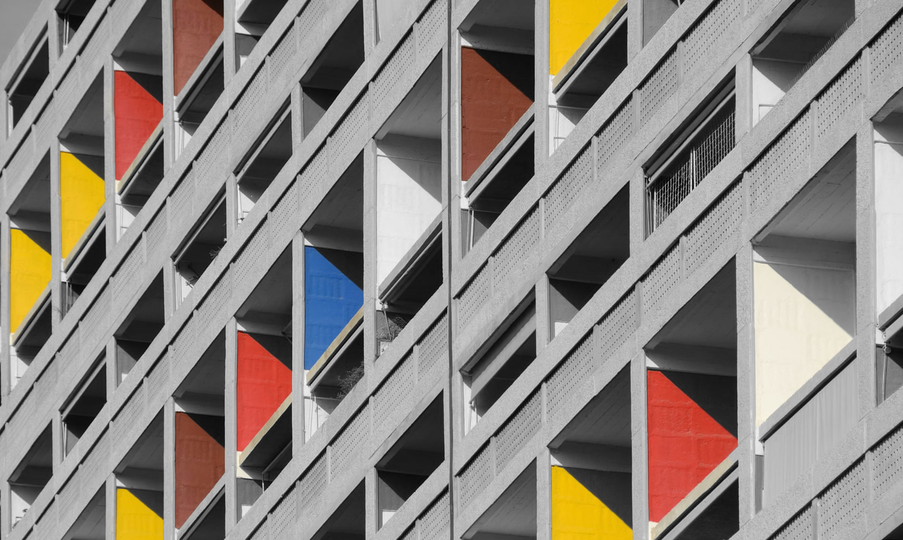

MODERNISM
Charles-Édouard Jeanneret (6 October 1887 – 27 August 1965), known as Le Corbusier, was a Swiss-French architect, designer, painter, urban planner, writer, and one of the pioneers of what is now called modern architecture. He was born in Switzerland and became a French citizen in 1930. His career spanned five decades, and he designed buildings in Europe, Japan, India, and North and South America. Dedicated to providing better living conditions for the residents of crowded cities, Le Corbusier was influential in urban planning, and was a founding member of the Congrès International d'Architecture Moderne (CIAM). Le Corbusier prepared the master plan for the city of Chandigarh in India, and contributed specific designs for several buildings there.
CRITICALLY ACLAIMED
Chandigarh Capitol Complex, located in the sector-1 of Chandigarh city in India, is a government compound designed by the architect Le Corbusier and is a UNESCO World Heritage Site. It is spread over an area of around 100 acres and is a prime manifestation of Chandigarh's architecture. It comprises three buildings, three monuments and a lake, including the Palace of Assembly or Legislative Assembly, Secretariat, High Court, Open Hand Monument, Geometric Hill and Tower of Shadows. It was added in UNESCO World Heritage Site List in 2016.